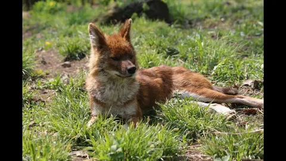
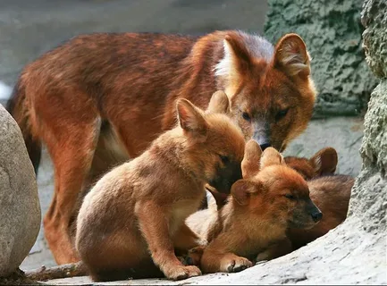
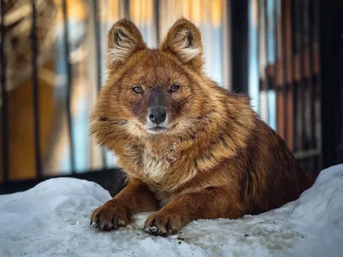
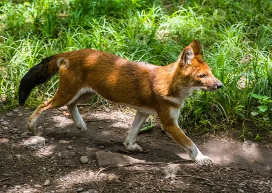
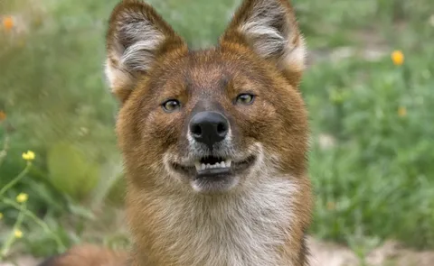
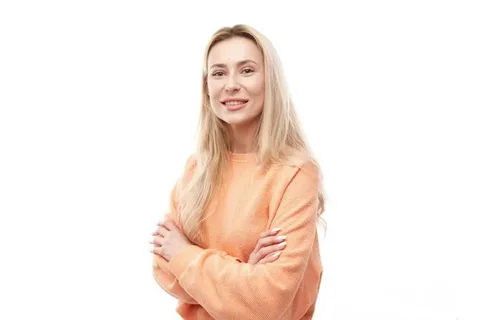
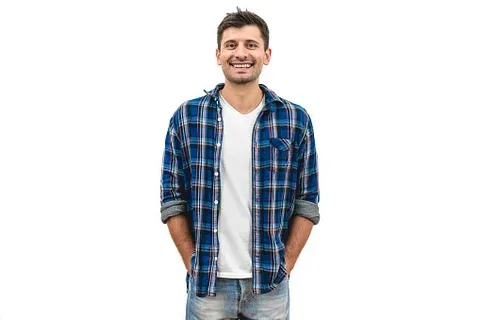

Мои подопечные
Мы помогаем тем, кто не может попросить о помощи
Наш проект активно поддерживает красных волков, которые были замечены в дикой природе или нуждаются в особом внимании. Каждый подопечный — это реальная история. Мы собираем информацию через фотоловушки, сотрудничаем с заповедниками и волонтёрами, чтобы отслеживать состояние животных и, при необходимости, оказывать помощь.
Ваши пожертвования идут напрямую на поддержку подопечных: установку фотоловушек, покупку оборудования, информационные стенды и просветительскую работу. Даже небольшая сумма помогает сохранить редкий вид и его естественную среду обитания.
Наши подопечные

Тайга
Молодая самка из Лазовского заповедника. Осталась без матери после браконьерской активности. Сейчас успешно охотится в стае.
Пожертвовать Тайге
Буран
Вожак небольшой стаи в Приморском крае. Один из немногих красных волков, которых регулярно фиксируют фотоловушки.
Пожертвовать Бурану
Искра
Самка с тремя щенками. Благодаря помощи проекта её семья получила больше шансов на выживание в суровых условиях.
Пожертвовать Искре
Север
Одинокий самец, мигрирующий по границе с Китаем. Требует особого внимания из-за высокой угрозы браконьерства.
Пожертвовать Северу
Луна
Молодая самка 2025 года рождения. Активно участвует в охоте и уже внесена в базу наблюдений проекта.
Пожертвовать Луне
Амур
Опытный самец, один из старейших известных красных волков в регионе. Настоящая легенда заповедника.
Пожертвовать АмуруОтзывы

«Спасибо за возможность помогать таким красивым и редким животным. Очень трогательная история Тайги!»
— Екатерина М., Владивосток
«Перевёл небольшую сумму. Приятно осознавать, что даже маленькая помощь реально работает.»
— Алексей В., Москва«Сайт сделан с душой. Чувствуется настоящая забота о природе. Буду следить за проектом!»
— Ольга С., Новосибирск